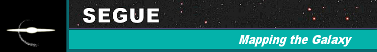

|  | ||
CreditsSEGUE is part of the Sloan Digital Sky Survey (SDSS-II); use and acknowledgement of SEGUE data should follow SDSS guidelines:Acknowledging SDSS: Non-Commercial UseNon-commercial scientific and technical publications using SDSS data should include the following acknowledgment:
Please also refer to the appropriate SDSS technical publications. Acknowledging SDSS: Commercial UseData from the SDSS public archive may not be used for any commercial publication or other commercial purpose except with explicit approval by the Astrophysical Research Consortium (ARC). Requests for such use should be directed to the ARC Corporate Office via ARC's Business Manager as follows:
ARC Business Manager c/o University of Washington Office of Research, Box 351202 Seattle, WA 98195 Phone: 206-685-7857 Email: evans@astro.washington.edu
Guidelines for use and acknowledgement of SDSS and SDSS-II data can also be found at: http://www.sdss.org/collaboration/credits.html | ||